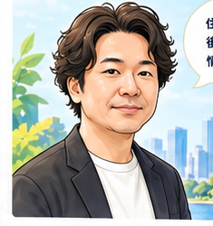

山口 功記
「買える物件」ではなく、買ってから後悔しにくい物件を一緒に探します。
東京23区の中古マンションを中心に、価格の妥当性、資産性、管理状態、住宅ローン、そして5年後・10年後の売却まで含めて確認しています。購入・売却を一度きりの取引ではなく、その後の結婚・出産・転職・住み替えまで続くライフプランの一部として考え、長く相談していただける関係づくりを大切にしています。
異業種の経験も、いまの不動産仲介に活きています
山口の強み
💻 IT・SE経験
SEとして培った情報整理・比較の視点を活かし、物件・ローン・市況データをできるだけ分かりやすく整理してお伝えします。
🏗 建物・リフォームの視点
ゼネコン経験を活かし、間取りや内装だけでなく、建物構造・修繕・リフォームの観点も含めて確認します。
🏢 幅広い仲介経験
賃貸・投資・中古マンションを含む幅広い取引経験をベースに、実需のお客様には「買った後」「売る時」まで考えた提案を行います。
🏦 住宅ローン比較
20行以上の金融機関を比較し、変動・固定・50年・諸費用・単身・住み替えなど、条件に合った組み方を検討します。
相談できること
得意エリア・得意分野
品川区・目黒区・大田区・湾岸エリアを中心に、港区・中央区・江東区を含む東京23区の中古マンションを扱っています。特に大井町、大崎、五反田、品川シーサイド、中目黒、祐天寺、学芸大学、都立大学、大森、蒲田、勝どき、晴海、豊洲、月島などは継続的に市場を追っています。
タワーマンション、築古マンション、リノベーション物件などを、資産性・価格妥当性・将来売却・管理状態・修繕計画の観点から評価します。
自身も「購入・売却・住み替え」を経験
自身でも不動産購入・売却を経験し、都立大学で購入した住まいから大井町へ住み替えています。現在は子育て中でもあるため、単身・共働き・子育てファミリー、それぞれで変わる住まい選びの優先順位も実感を持って考えています。
お客様へのスタンス
不動産は一度きりの取引ではなく、人生のライフプランに深く関わるものだと考えています。条件に合う物件を紹介するだけでなく、「なぜ買うのか」「将来どう売るのか」「ローンをどう組むのか」まで一緒に考えます。
そして、何かあったときに「エージェント山口に相談しよう」と思い出していただける存在を目指しています。
相談方法
物件購入・売却査定・住み替え・住宅ローン・セカンドオピニオンなど、まだ具体的でない段階でも大丈夫です。オンライン相談に加えて、明治神宮前〈原宿〉駅のオフィスでの対面面談にも対応しています。
「この物件どう思う？」「この予算で買って大丈夫？」「売るなら今なのか？」といった段階からお気軽にご相談ください。
エージェント山口に相談する
LINE・メール・オンライン・明治神宮前〈原宿〉駅オフィスでの対面面談から、ご都合に合わせてお選びいただけます。